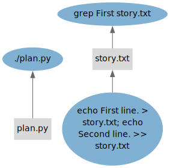
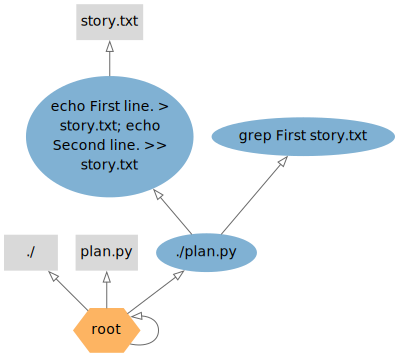
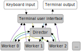

Introduction¶
The “Getting Started” section consists of a series of short tutorials. Each tutorial introduces a few concepts at a time to maintain a gentle learning curve. The following initial competencies are assumed:
- Basic Python programming.
- Working with a virtual terminal.
- Editing text files.
Note that the examples in the tutorials are all small and use StepUp
in serial mode (-n 1) and non-interactively.
We believe this offers the best learning experience.
However, StepUp really shines in more complex use cases and when used interactively.
Once you know how StepUp works, you can impress yourself by effortlessly mastering
the daunting complexity of your projects. :)
Tutorial source files¶
Input files for each tutorial are stored in a corresponding subdirectory under
docs/getting_started/
within StepUp Core’s source code.
Each directory contains a script named main.sh,
which simply runs the example in non-interactive mode,
generating the outputs that are included in the documentation.
StepUp architecture¶
The tutorials use terminology defined in the small architecture overview given below. This overview summarizes the internals of StepUp, omitting many details for the sake of clarity. It provides just enough background to get a basic understanding of its core concepts.
Workflow (graphs)¶
StepUp keeps track of what it needs to do and what it has already done in a workflow data structure. This workflow is represented by two direct acyclic graphs (DAGs), which comprise the same nodes.
Nodes¶
The nodes of the graph can be instances of the following main classes:
-
A
Stepdefines a program that can be executed with all the information for a specific execution: working directory, command, arguments, inputs, outputs, etc. A step can also be in one of the following states:PENDING: the step cannot yet be scheduled because some inputs have not been declared or built yet.QUEUED: all inputs are available and the step is waiting to be executed.RUNNING: the step is being executed by one of the workers.SUCCEEDED: the step has been successfully completed.FAILED: the subprocess exited with a non-zero exit code or some output files were not created.
-
A
Filedefines a path and a status, which can be any of the following:AWAITED: the file is the output of a step that has never been executed so far. (Such files are never deleted when cleaning up outputs.)BUILT: the file is the output of a step that has been successfully executed.OUTDATED: the file is the output of a step that has been executed, but inputs of the step have been modified since then.VOLATILE: the file is (or can be) created by a step, but it is volatile. It cannot be used as input, no hashes are computed for it. These files are only registered so that they can be removed when appropriate. They are typically different every time they are created, even with the same inputs.STATIC: the file is written by you and can only be an input to a step. (Note that step inputs can also be outputs of previous steps.)MISSING: a static file that has gone missing.
There are also a few special nodes:
- The
Rootnode is the top-level node, of which there is only one. - A
DeferredGlobnode contains a glob pattern of files that are made static when they are used as input.
Edges¶
The StepUp workflow has two types of directed edges (arrows) connecting pairs of nodes. Each type of edge is used to define a graph with its own rules and logic.
-
The “dependency graph” consists of “supplier ➜ consumer” edges. In this graph, an edge points from a node that provides something to a node that uses that something. A few examples:
- If a step uses a file as its input, it is the consumer of that file.
- Likewise, a step is the supplier of its outputs
- Every file is the consumer of its parent directory.
(The only exceptions are
./and/.) - A step is the consumer of its working directory.
The following diagram from the Dependencies tutorial illustrates this type of edge. (Directories are not included, steps are blue ellipses, files are grey rectangles.)

The build algorithm in StepUp will traverse upwards through this graph as it executes the steps, similarly to tup.
-
The “provenance graph” consists of “creator ➜ product” edges. An edge is added to this graph whenever a new node is created. Each (active) node must have one creator, but nodes can have multiple products. Examples include:
- A step is the creator of its output files.
- If a
plan.pydefines new steps, then the./plan.pystep is the creator of the new steps. (The same goes for any other step creating new steps.) - If a step declares a static file, the step is the creator of the static file.
- The initial
plan.pystep has theRootnode as its creator. - Only the
Rootnode is its own creator, making it the top-level node by construction.
The following graph from the Dependencies tutorial illustrates this type of edge. (Steps are blue ellipses, files are grey rectangles, root is an orange hexagon.)

Processes¶
The following diagram illustrates how the components of StepUp interact. Legend:
- White boxes: your fingers and eyes
- Grey boxes: processes
- The terminal user interface is the part of StepUp that you interact with
when you run the
stepupcommand. - The director holds the workflow data structure and is responsible for scheduling steps and watching for file changes.
- The worker processes execute steps and compute file and step hashes.
- The terminal user interface is the part of StepUp that you interact with
when you run the
- Grey arrows: standard input and standard output.
- Yellow arrows: startup of subprocesses
- Blue arrows: remote procedure calls to control the director and the workers
- Purple arrows: remote procedure calls for progress updates
- Green arrows: remote procedure calls to extend the workflow
